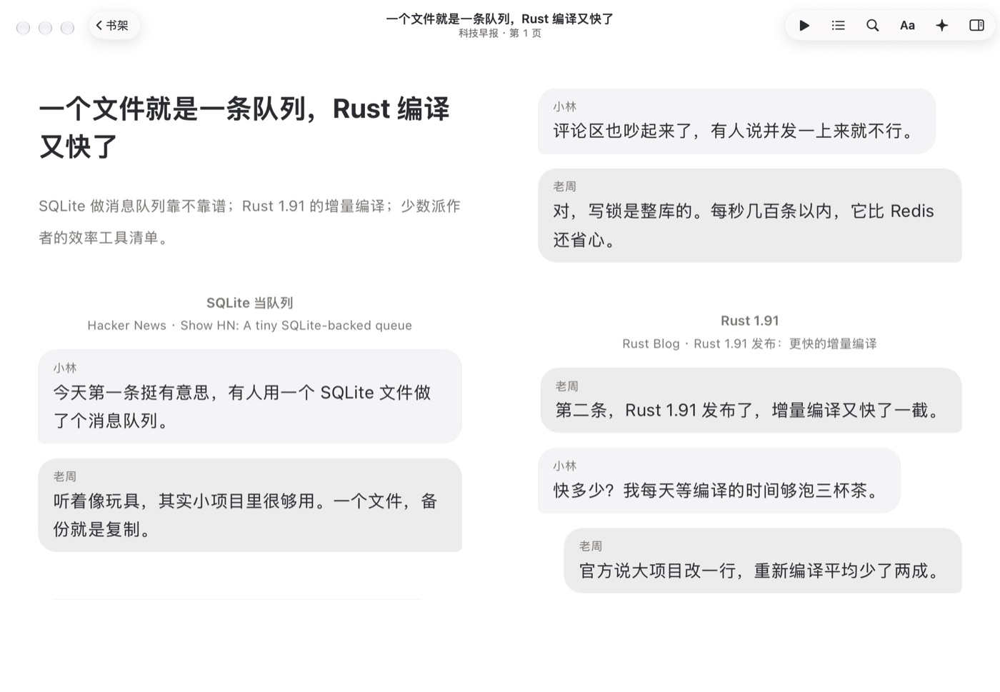
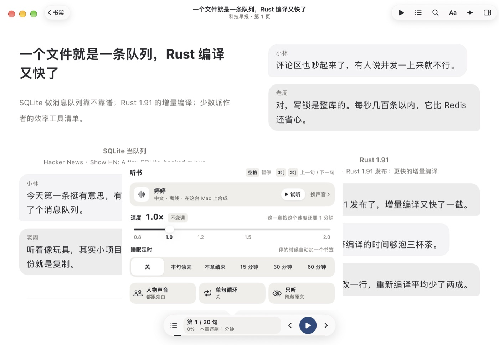
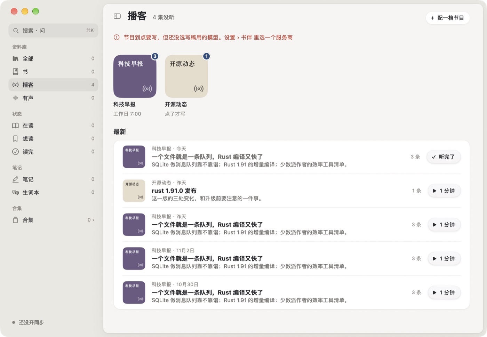
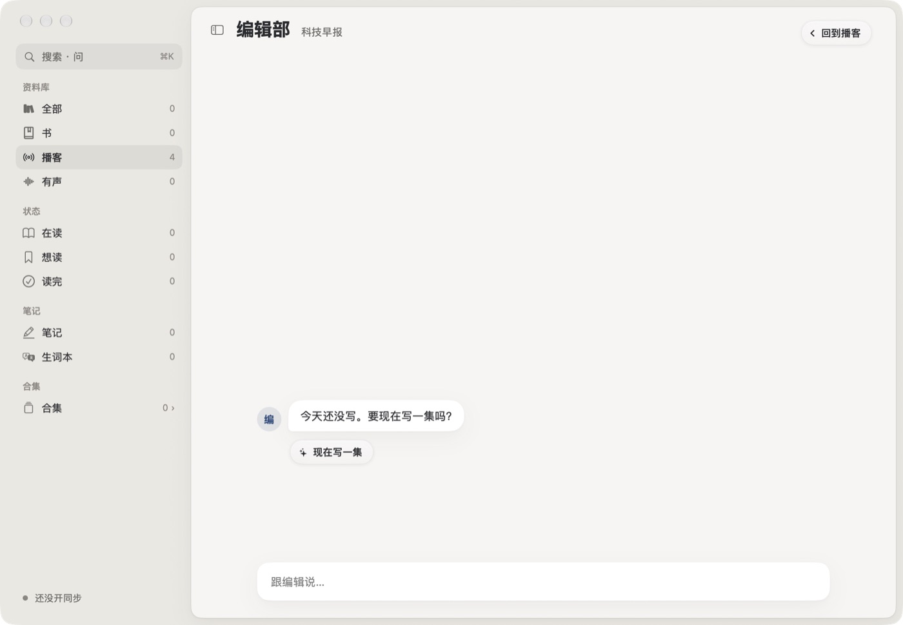

2026-11-04。用一个空书库加 -debugEpisodes 1 造的两档节目、五集，把播客页、编辑部、配一档节目、一集的窗口和听的面板都点了一遍。对照的是已确认的 播客.html（Mac · 最新 / 单集 / 文稿）。结论：小毛病已经修了一批；大的问题是 Mac 上只做了确认稿的一半，没有贴底的播放条、没有单集页、没有片段和稍后听，点节目封面直接进编辑部，所以用起来像“一个能生成文章的列表”，不像播客。
提交 5634baa。只改字、排序和明显的毛病，样子没动。
按“哪天写的”排，不按“这一集是哪天的”。补写的、重写的旧一集会跑到最上面，今天那集反而沉底。现在和节目自己的列表一样，按日期、再按写的时间。core/…/podcast.rs latest_episodes
剧集不在书架上，点了回到的是“全部”。现在写“‹ 播客”，点了回到播客页；副标题是“科技早报 · 约 12 分钟”。
标题“听书”、睡眠定时“本章结束”、胶囊“本章还剩”、一块“人物声音 · 都跟旁白”（播客的主持人早就各有声音）、一块灰掉的“逐句翻译 · 以后”。现在是“听 / 本集结束 / 本集还剩”，那两块不放。
窗口宽过 880 就排两栏，每个气泡只有半页宽，老周靠右那一下几乎看不出来，一段对话还会被拦腰切到右页。剧集现在总是一栏，气泡一左一右。
系统把键盘给了第一个输入框。现在打开时谁都不拿，点了才编辑。


按影响排。都是对照截图和代码看的。
确认稿里封面进的是节目页（单集 / 来源 / 怎么做的），编辑部只是节目页上的一个入口。现在节目只能右键“改设置…”，新用户找不到。编辑部空着的时候是一整屏空白，底下一个输入框。
点“播放”会弹出一个书页窗口，播客页上看不出正在放什么、放到哪；要暂停得切到那个窗口。确认稿里播放条一直贴在书架窗口底边。
灰色小字夹在简介和播放钮之间，其实是“用了 3 篇原文”。确认稿用的是来源小方标（Y、G、少），一看就知道今天有哪些站。
只有标题从黑变成深灰，加一个“✓ 听完了”。听了一半的没有任何样子（确认稿：胶囊里一道细进度、“还剩 9 分”）。正在放的那行也没铺淡墨蓝。
“科技早报”四个字糊成一团，又和右边一行“科技早报 · 今天”重复。小封面只留颜色和电台记号就够了。
确认稿：正在念的气泡描一圈墨蓝，念过的字黑、没念的灰；每条开头一行“2 · Rust 1.91 发布 · 01:58”。现在每条只有居中的小标题和一行灰色出处，出处像一句注释，看不出能点。
两位主持人各用一个声音，面板上只露出第一个。“换声音”应该是两行：小林 · 婷婷、老周 · Eddy。
把名字改成“我的早报”，旁边就写“从‘我的早报’开始”，像是有个叫这名字的模板。应该写模板自己的名字。
不管来源几个、多长都一样。按长度和来源数算一个大概就行。
是 系统设置 › 外观 › 显示滚动条“始终”时系统画的，跟随系统就好。


只拿理念，样子从语阅自己的东西来。
| 从哪来 | 拿什么 | 到语阅里变成什么 |
|---|---|---|
| hacker-podcast | 每天一集；每集有文字版，列出讲了哪几篇、每篇的原文和讨论链接 | 单集页的节目单：每条一行，来源、原文、HN 评论数，点时间跳过去。已经在确认稿里 |
| 小宇宙 | 时间戳评论、“高能时刻”：进度条上看得到别人在哪里有反应 | 没有别人，只有你自己：你存的片段、问过书伴的地方标在进度条上。一集哪里打动过你，一眼看得到 |
| 小宇宙 | 节目页：大名字、简介、主持、公告，下面单集列表 | 简介是你写给编辑的那句话；公告位写“下一集明早 7:00，已经收到 12 篇”；大按钮是“现在写一集” |
| Apple 播客 | 待播（Up Next）、“接着听”；本集结束定时；自动章节 | 稍后听和接着听；“本集结束 / 这条结束”定时；章节就是节目单，不用另做 |
| Apple 播客 | 文稿跟着声音高亮，能搜 | 已经有（书页本来就会）。要补的是播放条上的“文稿”钮 |
| Apple 播客 | 每档节目单独的倍速；Smart Play（新闻从最新一集放） | 每档节目记住自己的倍速。早报类点封面上的播放，直接放今天那集 |
| 都不拿 | 评论区、榜单、订阅、视频、背景音乐 | 和方案第 3.7 节一样 |
需要你点头的是这一节。确认了我再画进原型。
播客页最上面一颗“今天的 · 3 集 · 26 分钟”。按节目早晚排好连着放，两集之间主持人说一句过门（“接下来是开源动态”），用的是下一集主持人的声音。像打开收音机，不用一集一集点。
进度条按条分段，悬停显示这条的标题；⌘→ 跳到下一条。连着跳过同一类话题两次，听完问一句“以后少讲这种？”，点一下就记进节目的“少听什么”。不偷偷改。
听了一半的那集，列表里不写“还剩 9 分”，而是“停在第 2 条 · Rust 1.91”。对新闻来说，记得讲到哪件事比记得几分几秒有用。
封面左上是节目名，右下角一行小字“第 16 期 · 11 月 4 日”。不用另配图，每一集自然就不一样。
一集放完，编辑部冒一条：“今天哪条最有用？”下面是今天几条的标题，点一条就行，不点也不追问。下次挑稿时多给这一类一点分量。比让人去调那五格“多一点少一点”自然。
菜单栏的电台图标已经有了。加上播放 / 暂停和“现在在讲：Rust 1.91”，书架窗口关着也能听、能跳条。
前三步是已确认的原型，直接做；第四步等你看完第四节。全做完、自己跑过一遍之后才轮到 iPhone 和 Android。